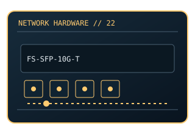

[ MODEL-SPECIFIC NETWORK HARDWARE ]
FS SFP-10G-T 10GBASE-T SFP+ Copper Transceiver
RJ-45 copper SFP+ module for 10GBASE-T switch interfaces. This entry uses the labeled manufacturer model identifier and cites primary product/support documentation.

MODEL IDENTIFICATION: Match the complete model/part number and hardware revision on the item label to manufacturer documentation. Do not apply this entry to near-name variants.
Exact specifications and compatibility
| Cataloged model | FS SFP-10G-T 10GBASE-T SFP+ Copper Transceiver |
|---|---|
| Dedicated subcategory | SFP transceivers: optical and copper |
| Bus / host interface | SFP+ module; host cage must support copper module power/thermal requirements. |
| Ports / physical interfaces | 1 × RJ-45; twisted-pair copper Ethernet. |
| PHY, radio or protocol | 10GBASE-T with lower-rate auto-negotiation depending on module/host. |
| PoE | No PoE input or PoE output is documented for this product. |
| Link-rate vs throughput | Up to 10Gb/s nominal; link rate, cable category and distance govern; actual payload is lower. Link rates are nominal negotiated/PHY specifications, not measured application throughput; no measured specimen result is claimed. |
| Firmware / driver support | No OS driver; host switch firmware and SFP+ module support list are key. |
| Compatibility checks | Copper SFP+ modules dissipate more heat than optical modules; check host thermal limits and stated cable distance. |
Model-specific notes
Do not assume every SFP+ host supports RJ-45 modules.
Primary manufacturer sources
- FS SFP-10G-T product specificationsManufacturer product specification or documentation for the exact model/family.
- Manufacturer support and compatibility resourcesFirmware, driver, compatibility, revision or support details; applicability may depend on the exact hardware revision and region.
Vendor maximum rates are not test results. Confirm regional variants, hardware revision and current support status with the manufacturer.